"Je vais jusqu'au bout, même si personne ne peut m'accompagner."
Biographies des Personnages
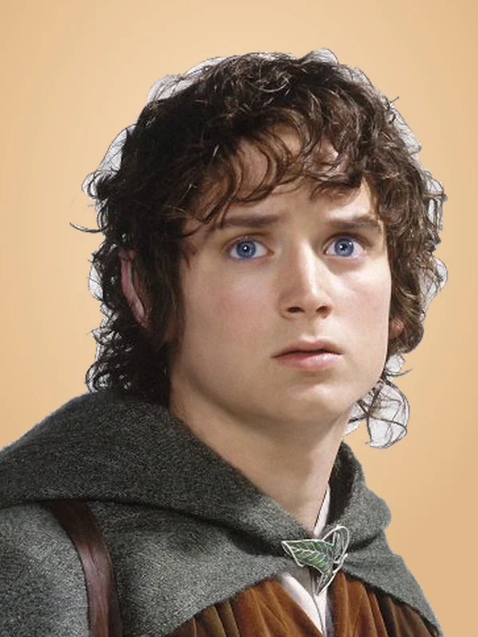
Frodon Sacquet - Incarné par Elijah Wood
Frodon Sacquet est un hobbit de la Comté qui se voit confier la tâche de détruire l'Anneau Unique.
Citation célèbre
Alliances et Amis proches
- Sam Gamegie : Son jardinier et ami dévoué qui l'accompagne jusqu'au Mordor.
- Gandalf : Le guide et mentor qui l'aide à comprendre l'importance de sa quête.
- Aragorn, Legolas et Gimli : Membres de la Communauté qui lui offrent soutien et protection.
Rôle dans la quête de l'Anneau
Frodon hérite de l'Anneau Unique de son oncle Bilbon et accpete la dangereuse mission de le détruire. Sa bravoure, sa résistance et sa volonté d'aller au-delà de ses propres peurs font de lui le héros de cette quête.
Traits de Caractère
- Courageux et humble
- Dévoué et loyal
- Résilient face aux épreuves
Chronologie Personnelle
- Naissance : 22 septembre 2968 du Troisème Âge
- Acquisition de l'Anneau : En 3001, hérite de l'Anneau Unique
- Formation de la Communauté de l'Anneau : Début de quête en 3018
- Destruction de l'Anneau : Accomplissement de sa mission en 3019
Arme et Objet Spécifique
- Dard : Une épée elfique lumineuse qui lui est offerte par Bilbon, capable de détecter les Orques à proximité.
- Mithril : Armure légère, rare et précieuse, également cadeau de Bilbon.
Origines et Peuple
Originaire de la Comté, Frodon est un hobbit typique par sa taille, son amour pour la nature et sa vie simple. Sa destinée le conduit pourtant bien loin de son pays d'origine.
Anecdotes et Faits Divers
Frodon porte une cicatrice invisible laissée par la dague du Roi-Sorcier à Amon Sûl, une blessure qui le tourmente pendant de nombreuses années.
Évolution du Personnage
Au début de son voyage, Frodon est plein d'espoir et d'innocence, mais la charge de l'Anneau et les épreuves du Mordor le marquent profondément. Il finit par partir pour les Havres Gris, incapable de vivre en pais en Terre du Milieu après sa quête.
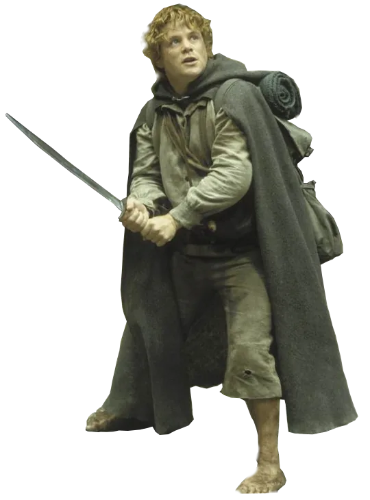
Sam - Incarné par Sean Astin
Sam est un hobbit de la Comté, fidèle jardinier et ami de Frodon, qui l'accompagne dans sa quête pour détruire l'Anneau Unique.
Citations célèbres
"Je ne peux pas le porter pour vous, mais je peux vous porter, vous !"
"Il y a du bon en ce monde, Mr Frodon, et il faut se battre pour cela."
Alliances et Amis proches
- Frodon Sacquet : Son ami le plus proche, qu'il accompagne jusqu'au bout pour l'aider à détruire l'Anneau.
- Gandalf : Le magicien qui encourage son courage et son dévouement.
- Aragorn : Le chef de la Communauté qu'il respecte pour sa bravoure et son sens du devoir.
Rôle dans la quête de l'Anneau
Sam est le soutien le plus loyal et dévoué de Frodon, se chargeant des provisions, l'encouragent et le protégeant contre les dangers de la quête. Sans lui, Frodon aurait sans doute échoué dans sa mission.
Traits de Caractère
- Courageux
- Loyal
- Simple et humble
Chronologie Personnelle
- Naissance : Né dans la Comté, fils du jardinier Hamfast Gamegie.
- Début de la quête : Rejoint Frodon et la Communauté de l'Anneau pour protéger la Terre du Milieu.
- Montagne du Destin : Accompagne Frodon jusqu'au sommet pour accomplir leur mission.
- Retour dans la Comté : Après la quête, retourne chez lui et devient maire de Hobbitebourg.
Arme et Objet Spécifique
- Sting : Utilise temporairement l'épée "Dard" appartenant à Frodon.
- Élixir d'eau d'Elven : L'eau de Lórien, qui lui est d'un grand soutien dans les moments difficiles de la quête.
Origines et Peuple
Sam est un hobbit de la Comté, né dans une famille modeste de jardiniers. Les hobbits sont connus pour leur amour de la paix, de la nature, et de la simplicité.
Anecdotes et Faits Divers
- Relation avec Frodon : Sa loyauté envers Frodon a inspiré de nombreux récits et chansons dans la Terre du Milieu
- Admiration pour les Elfes : Sam est fasciné par le monde des Elfes, et rêve de les rencontrer.
Évolution du Personnage
De simple jardinier, Sam devient un héros humble qui joue un rôle essentiel dans la destruction de l'Anneau. Son courage et son dévouement pour Frodon lui valent le respect et l'admiration des peuples libres de la Terre du Milieu.
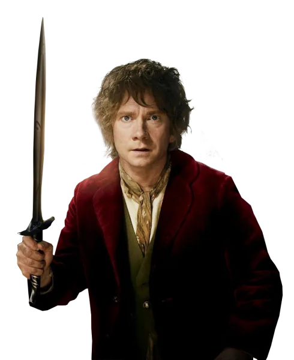
Bilbon Sacquet - Incarné par Martin Freeman
Bilbon Sacquet est un hobbit de la Comté qui part à l'aventure avec une compagnie de nains pour reprendre leur royaume et trésor volé par le dragon Smaug.
Citations célèbres
"Je ne connais pas la moitié d'entre vous à moitié que je le voudrais, et j'aime moins de la moitié d'entre vous à moitié aussi bien que vous le méritiez."
"Je suis en retard, en retard pour une aventure !"
Alliances et Amis proches
- Thorin Ecu-de-Chêne : Chef de l'expédition des Nains pour reprendre Erebor ; Bilbon développe un respect et une amitié complexe avec lui.
- Gandalf : Le magicien qui l'invite à partir à l'aventure et devient son mentor.
- Elrond : Seigneur de Fondcombe qui aide Bilbon et la compagnie des Nains.
Rôle dans la quête d'Erebor
Bilbon devient le "cambrioleur" de l'expédition des Nains. Il surmonte ses peurs, afronte le dragon Smaug et récupère l'Arkenstone, jouant un rôle clé dans la reconquête d'Erebor.
Traits de Caractère
- Curieux et Intrépide
- Loyal et Honnête
- Intelligent et Malin
Chronologie Personnelle
- Naissance : Né dans la Comté, au sein de la famille Sacquet.
- Départ pour l'aventure : Rejoint les Nains et Gandalf pour reprendre Erebor.
- Rencontre avec Gollum : Dans les Monts Brumeux, il trouve l'Anneau et trompe Gollum en résolvant ses énigmes.
- Retour dans la Comté : De retour chez lui, il devient une légende et rédige ses mémoires.
Arme et Objet Spécifique
- Dard : Une petite épée elfique qu'il trouve en chemin et utilise pour se défendre.
- Anneau Unique : Il trouve l'anneau dans la grotte de Gollum, ignorant son puvoir maléfique.
Origines et Peuple
Bilbon est un hobbit de la comté, issu de la famille Sacquet. Les hobbits sont connus pour leur amour du confort et des plaisirs simples.
Anecdotes et Faits Divers
- Premier hobbit aventurier : Bilbon est l'un des premiers hobbits à s'aventurer loin de la Comté, brisant les conventions de son peuple.
- Respect des Elfes : Il devient un invité de choix à Fondcombe, où il passe ses dernières années entouré des Elfes.
Évolution du Personnage
De hobbit sédentaire et prudent, Bilbon devient un aventurier courageux et respecté. Il gagne en sagesse et en expérience, et son aventure change profondément sa perception du monde et des autres peuples de la Terre du Milieu.

Gandalf le Gris - Incarné par Ian McKellen
Gandalf est un puissant sorcier qui guide et conseille la Communauté de l'Anneau.
Citations célèbres
"Un magicien n'est jamais en retard, ni en avance d'ailleurs. Il arrive précisément à l'heure prévue."
"Tout ce que nous avons à décider, c'est ce que nous devons faire du temps qui nous est imparti."
"Vous ne passerez pas !"
Alliances et Amis proches
- Bilbon Sacquet : Leur amitié se développe lors de la quête d'Erebor, où Gandalf voit en lui un potentiel insoupçonné.
- Frodon Sacquet : Gandalf guide et conseille Frodon dans sa mission de détruire l'Anneau Unique.
- Aragorn : Allié de donfiance, Gandalf soutient Aragorn dans sa quête pour devenir roi.
- Saroumane : Autrefois son mentor et chef du Conseil Blanc, leur relation s'effondre quand Saroumane rejoint Sauron.
Rôle dans la quête d'Erebor
Gandalf identifie le danger que représente l'Anneau Unique et met en place la Communauté de l'Anneau pour le détruire. Il devient un guide pour Frodon et ses amis, affrontant de nombreux dangers et sacrifiant même sa vie dans les Mines de la Moria pour les protéger.
Traits de Caractère
- Sage et Perspicace
- Courageux et Dévoué
- Patient et Bienveillant
Chronologie Personnelle
- Arrivée en Terre du Milieu : Envoyé par les Valar pour contrer Sauron.
- Quête d'Erebor : Guide les Nains et Bilbon jusqu'à la Montagne Solitaire.
- Quête de l'Anneau : Joue un rôle central dans la découverte de l'Anneau et la formation de la Communauté.
- Renaissance en Gandalf le Blanc : Après sa bataille avec le Balrog, il revient avec des pouvoirs renforcés.
Arme et Objet Spécifique
- Glamring : Épée elfique qu'il obtient lors de la quête d'Erebor.
- Bâton de Magicien : Symbole de son pouvoir et de son rôle d'Istari (sorcier envoyé par les Valar).
Origines et Peuple
Gandalf est un Maia, un esprit ancien envoyé par les Valar pour protéger la Terre du Milieu contre Sauron. Sous sa forme humaine, il fait partie des Istari, un groupe de magiciens.
Anecdotes et Faits Divers
- Ami des Aigles : Gandalf est respecté par les Aigles Géants, qui l'aident à plusieurs reprises.
- Doyen des Hobbits : Sa proximité avec les hobbits est unique parmi les Istari, car il voit en eux un potentiel important pour changer l'histoire de la Terre du Milieu.
Évolution du Personnage
Gandalf passe de Gandalf le Gris à Gandalf le Blanc après sa victoire contre le Balrog. Ce changement marque une transformation de ses pouvoirs et de son autorité. Toujours sage et bienveillant, il devient plus résolu et intransigeant dans sa lutte contre les forces du Mal.
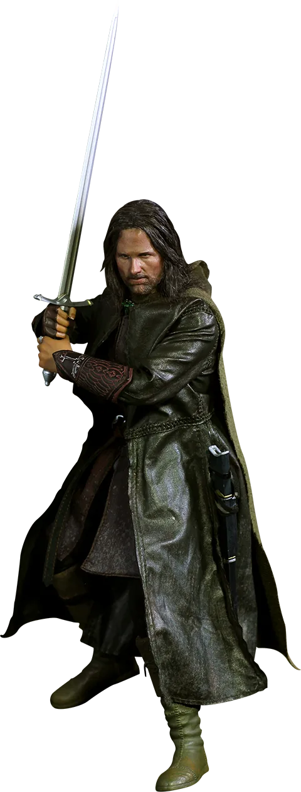
Aragorn - Incarné par Viggo Mortensen
Aragorn est un rôdeur du Nord, héritier de Gondor, qui joue un rôle crucial dans la lutte contre Sauron.
Citations célèbres
"Je ne peux pas choisir le chemin qui m'a été tracé, mais je peux le suivre avec courage."
"Il est une autre voie... par le Gouffre de Helm."
"Je ne vous dirai pas de ne pas pleurer, car toutes les larmes ne sont pas un mal."
Alliances et Amis proches
- Gandalf : Un ami et conseiller de confiance, Gandalf inspire Aragorn dans sa mission.
- Frodon Sacquet : Protecteur de Frodon, il lui prête son soutien et le protège lors de la quête de l'Anneau.
- Legolas et Gimli : Partenaires de comabt et amis loyaux, ils forment un trio inséparable lors de la guerre contre Sauron.
- Arwen : Son grand amour, qui renonce à son immortalité pour être à ses côtés.
Rôle dans la quête de l'Anneau
Héritier du trône de Gondor, Aragorn lutte pour restaurer la paix et l'unité des peuples libres. Il mène la Communauté de l'Anneau aux côtés de Gandalf, puis prend la tête des armées de Gondor et de Rohan pour défier Sauron et aider Frodon à accomplir sa mission.
Traits de Caractère
- Courageux et Héroïque
- Humble et Dévoué
- Juste et Stratégique
Chronologie Personnelle
- Jeunesse : Caché à Fondcombe pour échapper aux ennemis de son père, il est élevé par Elrond.
- Rôdeur : Il passe des années en tant que Rôdeur du Nord, protégeant les frontières de la Terre du Milieu.
- Quête de l'Anneau : Intègre la Communauté de l'Anneau et devient un leader de l'Alliance des Hommes.
- Couronnement : Après la chute de Sauron, il est couronné roi du Gondor et d'Arnor.
Arme et Objet Spécifique
- Andúril : Épée reforgée à partir des fragments de Narsil, symbole de son héritage royal.
- Anneau de Barahir : Héritage de sa lignée, représentant son droit de naissance en tant que descendant d'Isildur.
Origines et Peuple
Aragorn est un Dúnedain, membre du peuple des Hommes du Nord. Héritier d'Isildur, il est destiné à régner sur le Gondor et l'Arnor, les deux grands royaumes des Hommes.
Anecdotes et Faits Divers
- Rôdeur sous le nom de Thorongil : Avant les événements du Seigneur des Anneaux, Aragorn a servi sous ce nom pour protéger des peuples et se forger une réputation.
- Relation avec Arwen : Leur amour est marqué par un sacrifice mutuel, Arwen renonçant à son immortalité pour être avec lui.
Évolution du Personnage
Aragorn passe de Rôdeur errant à Roi du Gondor, assumant progressivement son rôle et sa responsabilité envers son peuple. Il gagne en assurance et accepte son destin, incarnant l'idéal du roi noble, juste et courageux.
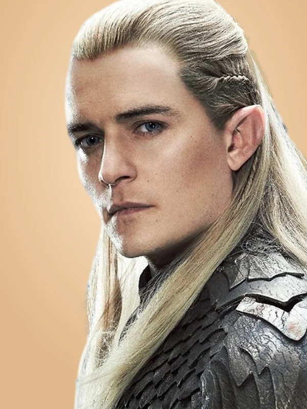
Legolas - Incarné par Orlando Bloom
Legolas est un elfe de la Forêt Noire, expert en tir à l'arc, qui rejoint la Communauté de l'Anneau pour détruire l'Anneau Unique.
Citations célèbres
"Un soleil rouge se lève. Beaucoup de sang a dû couler cette nuit."
"Ils courent comme des chasseurs."
"Pour la Comté ! Pour Frodon !."
Alliances et Amis proches
- Gimli : Bien que les nains et les elfes soient souvent en désaccord, Legolas et Gimli développent une amitié improbable et profonde.
- Aragorn : Il suit Aragorn avec loyauté, respectant son leadership et combattant à ses côtés.
- Frodon : Comme membre de la Communauté de l'Anneau, Legolas veille sur Frodon et l'aide dans sa quête.
Rôle dans la quête d'Erebor
En tant que membre de la Communauté, Legolas apporte ses compétences d'archer et son agilité elfique pour défendre le groupe. Il lutte contre les armées de Sauron et soutient la mission de Frodon jusqu'au bout.
Traits de Caractère
- Agile et Perceptif
- Loyal et Courageux
- Amical et Ouvert d'Esprit
Chronologie Personnelle
- Origines elfiques : Fils de Thranduil, roi des Elfes de la Forêt Noire, il grandit dans un environnement empreint de magie et d'anciens savoirs.
- Rencontre avec la Communauté : Il rejoint la Communauté de l'Anneau à Fondcombe, où il s'engage à défendre Frodon.
- Guerre contre Sauron : Combat aux côtés d'Aragorn et Gimli, notamment lors des batailles du Gouffre de Helm et des Champs du Pelennor.
Arme et Objet Spécifique
- Arc elfique : Son arme de prédilection, un arc gracieux et puissant qui fait de lui un tireur hors pair.
- Couteau de combat : En plus de son arc, il manie des couteaux elfiques pour le combat rapproché.
Origines et Peuple
Legolas est un elfe sylvain de la Forêt Noire, membre d'un peuple ancien et protecteur de la nature. Son père Thranduil règne sur ce royaume elfique.
Anecdotes et Faits Divers
- Compétition avec Gimli : Legolas et Gimli se lancent souvent des des défis amicaux pour compter leurs victoires au combat.
- Vision perçante : Il est capable de repérer des détails éloignés, ce qui aide souvent la Communauté de l'Anneau dans ses déplacements.
Évolution du Personnage
Legolas montre une évolution notable dans ses relations avec les autres races, développant une profonde amitié avec Gimli et un respect sincère pour les Humains. Sa loyauté et son ouverture d'esprit lui permettent de surmonter les préjugés et de lutter pour l'unité de la Terre du Milieu.
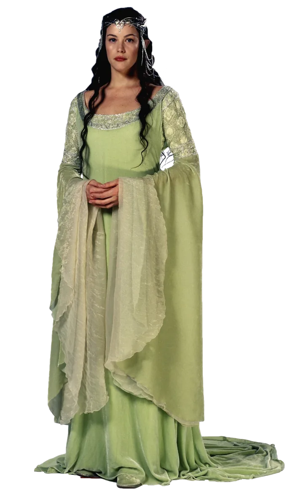
Arwen - Incarnée par Liv Tyler
Arwen est une elfe de Fondcombe, fille d'Elrond, qui renonce à son immortalité pour épouser Aragorn et soutenir la lutte contre Sauron.
Citation célèbre
"Je préfère vivre une vie mortelle à tes côtés que d'affronter tous les âges du monde seule."
"Si tu choisis une vie mortelle, je t'aimerais jusqu'à la fin de mes jours."
Alliances et Amis proches
- Aragorn : Son grand amour, pour qui elle renonce à son immortalité.
- Elrond : Son père, qui tente de la convaincre de quitter la Terre du Milieu pour préserver sa vie éternelle.
- Les Elfes de Lothlórien : Sa famille élargie et son peuple.
Rôle dans la quête de l'Anneau
Arwen joue un rôle de soutien moral, inspirant Aragorn dans sa lutte contre Sauron. Elle sauve également Frodon en le transportant à Fondcombe pour le guérir après sa blessure par le Roi-Sorcier.
Traits de Caractère
- Gracieuse et Courageuse
- Dévouée à ses proches
- Résiliente face aux défis émotionnels
Chronologie Personnelle
- Naissance : T.A. 241, fille d'Elrond et de Celebrían.
- Rencontre avec Aragorn : T.A. 2951, à Fondcombe.
- Mariage avec Aragorn : T.A. 3019, après la chute de Sauron.
- Mort : F.A. 121, à Cerin Amroth, Lothlórien.
Arme et Objet Spécifique
Elle ne porte pas d'arme mais son pendentif, l'Étoile du Soir, symbolise son amour pour Aragorn et son sacrifice.
Origines et Peuple
Arwen est une Elfe de la lignée royale, petite-fille de Galadriel et descendante de Lúthien, héritant de la beauté légendaire de son aïeule.
Anecdotes et Faits Divers
- Son amour pour Aragorn est souvent comparé à celui de Lúthien et Beren, une histoire d'amour similaire entre une Elfe et un humain.
- Dans les films, son rôle est amplifié, notamment avec la scène où elle sauve Frodon.
Évolution du Personnage
Arwen passe de la contemplation tranquille à un engagement actif, acceptant une vie mortelle par amour. Sa décision incarne le sacrifice et la force intérieure.
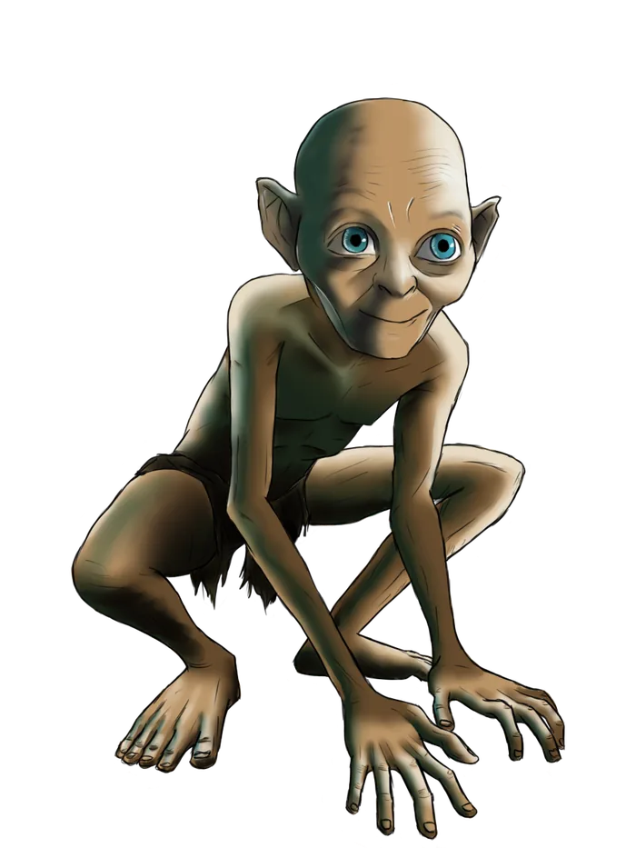
Gollum - Incarné par Andy Serkis
Gollum est une créature corrompue par l'Anneau Unique, qui guide Frodon et Sam vers le Mont Destin tout en cherchant à récupérer l'Anneau pour lui-même.
Citation célèbre
"Mon précieux... Ils l'ont volé, ils l'ont volé, mon précieux !"
Alliances et Amis proches
- Frodon : Une relation ambiguë entre amitié et manipulation.
- Sam : Méfiance mutuelle, souvent conflictuelle.
- L'Anneau Unique : Son obsession et sa seule véritable "alliance".
Rôle dans la quête de l'Anneau
Gollum est à la fois un guide et un obstacle. Il mène Frodon et Sam au Mordor tout en cherchant à récupérer l'Anneau, jouant un rôle décisif dans sa destruction en tombant avec lui dans les flammes du Mont Destin.
Traits de Caractère
- Rusé et Manipulateur
- Tourmenté entre le bien (Sméagol) et le mal (Gollum)
- Obsédé par l'Anneau, ce qui dicte toutes ses actions
Chronologie Personnelle
- Naissance : Vers T.A. 2430, sous le nom de Sméagol, parmi les riverains du Val d'Anduin.
- Découverte de l'Anneau : T.A. 2463, lorsqu'il tue son cousin Déagol pour le posséder.
- Transformation en Gollum : Plusieurs siècles d'isolement dans les montagnes.
- Rencontre avec Frodon et Sam : T.A. 3019, il devient leur guide vers le Mordor.
- Mort : T.A. 3019, tombe dans la lave du Mont Destin avec l'Anneau.
Arme et Objet Spécifique
Il utilise principalement sa ruse et ses mains pour attaquer.
L'Anneau Unique est à la fois son objet de pouvoir et de malédiction.
Origines et Peuple
Gollum était à l'origine un hobbit du peuple des riverains, vivant près de l'Anduin. L'Anneau l'a transformé en une créature méconnaissable.
Anecdotes et Faits Divers
- Sa double personnalité, Sméagol (le bon) et Gollum (le mauvais), représente le conflit intérieur causé par l'Anneau.
- C'est à cause de sa perte de l'Anneau que Frodon et la Communauté peuvent l'utiliser pour leur quête.
Évolution du Personnage
Gollum commence comme une créature vile et obsédée, mais son lien avec Frodon laisse entrevoir des éclairs de son ancienne personnalité. Cependant, son obsession pour l'Anneau finit par causer sa perte et la destruction de ce dernier.
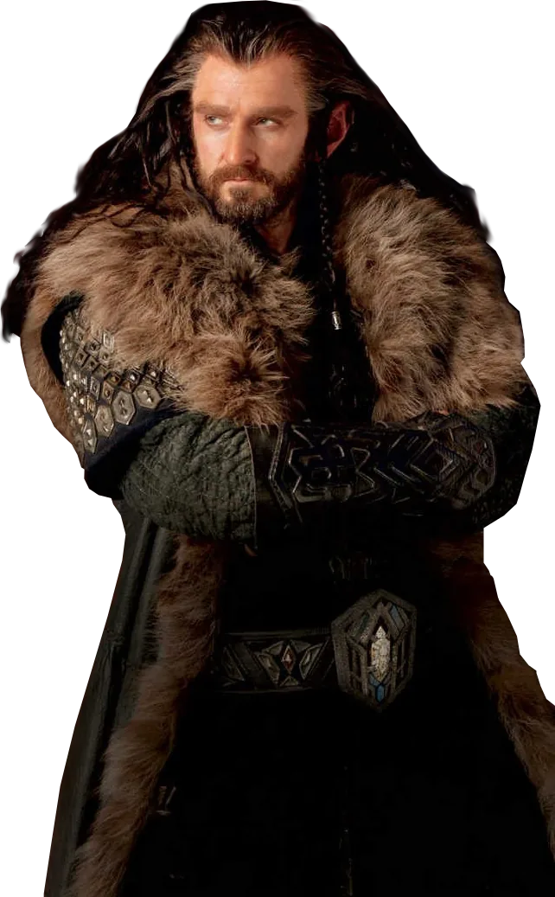
Thorin - Incarné par Richard Armitage
Thorin est un nain du peuple de Durin, qui se voit confier la tâche de reconquérir Erebor et son trésor des griffes du dragon Smaug.
Citation célèbre
"Si plus de gens accordaient de la valeur à la maison et à l'amour plutôt qu'à l'or, le monde serait un endroit plus heureux."
Alliances et Amis proches
- Fili et Kili : Ses neveux et compagnons les plus proches.
- Bilbon : Un ami improbable et un allié précieux.
- La Compagnie des Nains : Ses camarades dévoués dans la quête de reprendre Erebor.
Rôle dans la quête d'Erebor
Bien qu'il ne soit pas directement impliqué dans la quête de l'Anneau, Thorin joue un rôle clé dans les événements précédant cette quête, en rassemblant la Compagnie pour récupérer Erebor, ce qui affaiblit Smaug et modifie l'équilibre des forces en Terre du Milieu.
Traits de Caractère
- Fier et Déterminé
- Courageux mais parfois entêté
- Susceptible à l'avidité, notamment envers l'Arkenstone
Chronologie Personnelle
- Naissance : T.A. 2746, à Erebor, avant l'arrivée de Smaug.
- Exil des Nains : Après l'attaque de Smaug, il devient un leader en exil.
- Quête pour Erebor : En T.A. 2941, il conduit la Compagnie des Nains.
- Mort : Décède à la Bataille des Cinq Armées en 2941.
Arme et Objet Spécifique
Orcrist : Une épée elfique redoutable qu'il trouve dans une cachette de trolls.
Arkenstone : Un symbole de sa lignée royale et de son obsession.
Origines et Peuple
Thorin est un prince nain de la lignée de Durin, héritier du trône d'Erebor. Il représente la fierté et la résilience des Nains.
Anecdotes et Faits Divers
- Il porte le surnom de "Thorin Écu-de-Chêne", en référence à un morceau de bois qu'il utilisa comme bouclier lors d'une bataille.
- Sa quête est motivée par un profond désir de restaurer la gloire de son peuple et de récupérer son royaume perdu.
Évolution du Personnage
Thorin commence comme un leader noble mais est progressivement corrompu par obsession pour l'or et l'Arkenstone. Cependant, sur son lit de mort, il trouve la rédemption et reconnaît la valeur de l'amitié et de la paix.
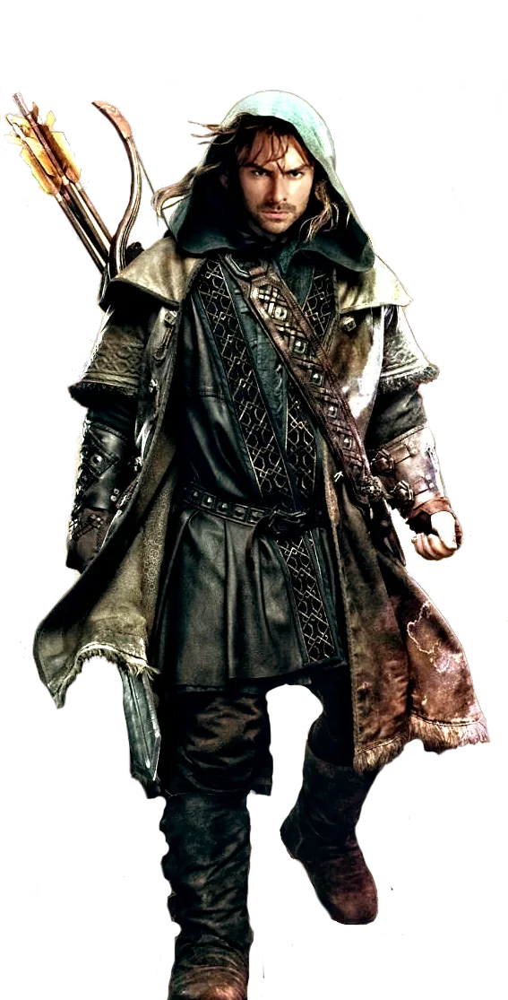
Kili - Incarné par Aidan Turner
Kili est un jeune nain courageux qui rejoint la quête de son oncle Thorin pour reconquérir Erebor et son trésor.
Citation célèbre
"Je suivrai Thorin, même jusqu'à la mort."
Alliances et Amis proches
- Thorin : Son oncle et roi, pour qui il est profondément loyal.
- Fili : son frère aîné et compagnon inséparable.
- Tauriel : Une Elfe avec qui il développe une relation affectueuse et improbable.
Rôle dans la quête d'Erebor
Kili n'est pas directement impliqué dans la quête de l'Anneau, mais il joue un rôle crucial dans la quête pour reprendre Erebor, aidant à affaiblir Smaug, ce qui influe sur les événements ultérieurs en Terre du Milieu.
Traits de Caractère
- Brave et Impulsif
- Curieux et Ouvert d'esprit
- Fidèle et protecteur envers ceux qu'il aime
Chronologie Personnelle
- Naissance : T.A. 2864, dans l'exil des Nains après la chute d'Erebor.
- Quête pour Erebor : Participe à l'expédition menée par Thorin en T.A. 2941.
- Mort : Tombe héroïquement à la Bataille des Cinq Armées en 2941.
Arme et Objet Spécifique
Arc et flèches : Kili se distingue par ses talents d'archer, rares parmi les Nains.
Epée courte : Utilisée au combat rapproché.
Origines et Peuple
Kili est un prince Nain, issu de la lignée de Durin. Jeune et fougueux, il incarne l'espoir et la volonté de son peuple de restaurer leur gloire passée.
Anecdotes et Faits Divers
- Kili est le plus jeune membre de la Compagnie des Nains et représente une nouvelle génération plus ouverte.
- Sa romance avec Tauriel, bien qu'inédite dans les livres, ajoute une dimension tragique et émotionnelle à son histoire.
Évolution du Personnage
Au début, Kili est un jeune Nain insouciant et plein d'énergie, mais la quête pour Erebor le pousse à prouver son courage et sa loyauté. Sa mort héroïque aux côtés de son frère Fili soulinge son dévouement à sa famille et à sa cause.
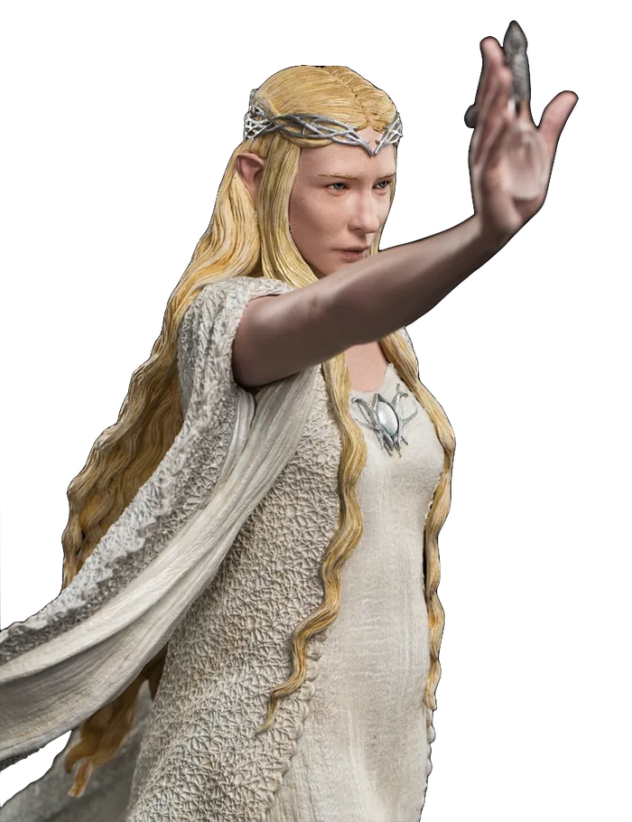
Galadriel - Incarnée par Cate Blanchett
Galadriel est une elfe de Lothlórien, dotée d'une grande sagesse et de pouvoirs magiques, qui aide la Communauté de l'Anneau dans leur quête.
Citation célèbre
"Même la plus petite personne peut changer le cours du futur."
Alliances et Amis proches
- Celeborn : Son époux, co-dirigeant de la Lothlórien.
- Gandalf : Ami et conseiller dans la lutte contre Sauron.
- Elrond : Son gendre, gardien de Fondcombe, avec qui elle partage des objectifs communs.
- Frodon et la Communauté de l'Anneau : Leur accorde refuge et des présents cruciaux pour leur quête.
Rôle dans la quête de l'Anneau
Galadriel joue un rôle de mentor et de guide spirituel. Elle fournit conseils, soutien et des artefacts magiques, comme la lumière d'Eärendil, qui aident la Communauté à accomplir sa mission.
Traits de Caractère
- Sagesse ancienne et Perspicacité
- Puissante mais bienveillante
- Déterminée à protéger la Terre du Milieu contre les forces du mal
Chronologie Personnelle
- Naissance : Première Âge, en Valinor, fille de Finarfin, prince des Noldor.
- Exil en Terre du Milieu : Arrive avec les Noldor au Premier Âge, cherchant un royaume à gouverner.
- Fondation de la Lothlórien : Devient la Dame du Bois d'Or au Second Âge.
- Rencontre avec la Communauté : En T.A. 3019, offre son aide lors de leur passage en Lothlórien.
- Retour en Valinor : Après la destruction de l'Anneau, quitte la Terre du Milieu pour les Terres Immortelles.
Arme et Objet Spécifique
le Miroir de Galadriel : Une fontaine magique révélant des visions du passé, du présent et de l'avenir.
Nenya : L'Anneau de l'Eau, un des trois anneaux des Elfes, qu'elle utilise pour protéger Lothlórien.
Origines et Peuple
Galadriel est une Elfe Noldo, parmi les plus anciennes et puissantes de son peuple. Issue de la lignée royale des Noldor, elle est marquée par l'histoire des Silmarils et la chute de ses ancêtres.
Anecdotes et Faits Divers
- Elle a refusé l'Anneau Unique quand Frodon le lui a offert, démontrant sa force de volonté.
- Elle est l'une des rares Elfes à avoir vu les Deux Arbres de Valinor avant leur destruction.
- Son nom signifie "Couronne de lumière" en Quenya, une référence à sa beauté et à sa sagesse.
Évolution du Personnage
Galadriel commence comme une princesse ambitieuse et exilée en quête de pouvoir, mais elle mûrit en une sage souveraine, consacrant sa vie à la préservation de la Terre du Milieu. À la fin, elle trouve la rédemption et la paix en retournant à Valinor.
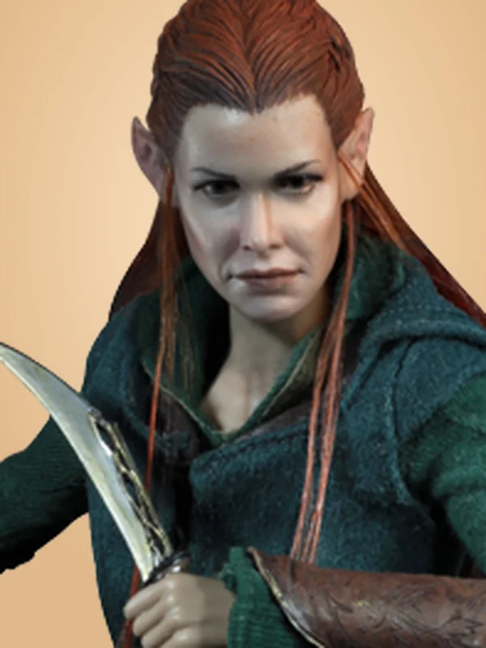
Tauriel - Incarnée par Evangeline Lilly
Tauriel est une elfe sylvestre, capitaine des gardes de la Forêt Noire, qui se distingue par son courage et son attachement à Kili, l'un des nains.
Citation célèbre
"Les autres ne verront pas le soleil se lever. Mais ce ne sera pas notre cas."
Alliances et Amis proches
- Legolas : Prince de la Forêt Noire, avec qui elle partage une profonde amitié teintée de respect mutuel.
- Kili : Nain qu'elle protège et pour lequel elle développe des sentiments, défiant ainsi les préjugés entre leurs peuples.
- Thranduil : Son roi, bien que leurs idéaux divergent.
Rôle dans la quête d'Erebor
Tauriel est une guerrière elfe loyale qui désobéit à Thranduil pour suivre son propre sens de la justice. Elle protège les Nains de la Compagnie de Thorin et aide à défendre Esgaroth contre les forces de Sauron.
Traits de Caractère
- Courageuse et Déterminée
- Loyale mais Capable de défier l'autorité pour suivre ses convictions.
- Empathique et Ouverte d'esprit, malgré les tensions entre Elfes et Nains.
Chronologie Personnelle
- Enfance : Orpheline élevée dans la Forêt Noire sous la protection de Thranduil.
- Capitaine des Gardes: Devient une guerrière exceptionnelle et la chef des forces armées du royaume de Thranduil.
- Rencontre avec Kili : Lors de l'emprisonnement des Nains, elle commence à remettre en question les ordres de Thranduil.
- Bataille des Cinq Armées : Joue un rôle crucial dans la défense des Nains et des Hommes contre les forces de Sauron.
Arme et Objet Spécifique
Deux lames courtes : Des armes agiles et efficaces pour le combat rapproché.
Arc elfique : Utilisé pour des attaques précises à distance.
Origines et Peuple
Tauriel est une Elfe Sylvaine de la Forêt Noire. Contrairement aux Noldor, son peuple est moins élitiste, vivant en harmonie avec la nature et maîtrisant des arts de guerre adaptés à leur environnement forestier.
Anecdotes et Faits Divers
- Tauriel est un personnage inédit, créé pour les films Le Hobbit. Elle n'apparaît pas dans les oeuvres originales de Tolkien.
- Son nom signifie "Fille de la Forêt" en Sindarin, reflétant son lien avec la nature.
- Sa relation avec Kili a suscité des débats parmi les fans en raison de l'écart culturel entre Elfes et Nains.
Évolution du Personnage
Tauriel commence comme une guerrière dévouée au service de son roi, mais sa rencontre avec Kili et ses expériences au-delà des frontières de la Forêt Noire l'ouvrent à d'autres perspectives. Elle se distingue par son humanité et sa capacité à transcender les barrières culturelles pour suivre ce qu'elle considère comme juste.
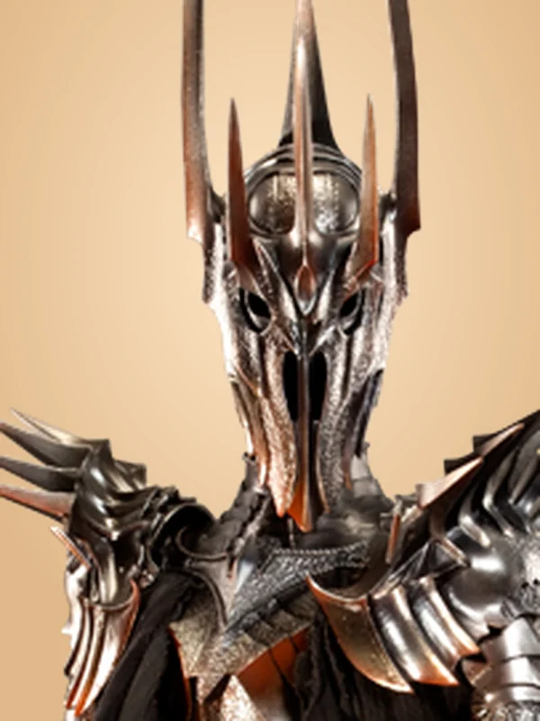
Sauron - Incarné par Sala Baker
Sauron est un seigneur des ténèbres qui forge l'Anneau Unique pour dominer la Terre du Milieu et cherche à le récupérer pour restaurer son pouvoir.
Citation célèbre
"Un Anneau pour les gouverner tous, un Anneau pour les trouver, un Anneau pour les amener tous et dans les ténèbres les lier."
Alliances et Amis proches
- Morgoth : Son maître et mentor, premier Seigneur des Ténèbres, auprès de qui il développe son ambition et son soif de pouvoir.
- Les Nazgûl : Ses plus fidèles serviteurs, neuf rois corrompus par les Aneeaux de Pouvoir.
- Saroumane : Un allié temporaire, séduit par ses promesses de domination.
Rôle dans la quête de l'Anneau
Sauron est l'antagoniste principal de l'histoire. Après avoir forgé l'Anneau Unique pour dominer les peuples libres, il tente de le récupérer pour restaurer sa pleine puissance. Sa quête de l'Anneau provoque les événements majeurs de la Terre du Milieu contre lui.
Traits de Caractère
- Ambitieux et Manipulateur
- Patient et stratège, préférant semer la discorde avant de frapper directement.
- Inflexible dans sa quête de pouvoir absolu.
Chronologie Personnelle
- Origine : Sauron est un Maia, un esprit immortel au service des Valar, qui fut corrompu par Morgoth.
- Forgeron des Anneaux : Sous l'apparence d'Annatar, il aide les Elfes à forger les Anneaux de Pouvoir, tout en créant secrètement l'Anneau Unique.
- Guerre de la Dernière Alliance : Il perd l'Anneau Unique lorsque son doigt est tranché par Isildur.
- Troisième Âge : Il reprend force à Dol Guldur sous le nom de Nécromancien avant de se manifester à nouveau à Barad-dûr.
Arme et Objet Spécifique
L'Anneau Unique : Source de son pouvoir, forgé dans les flammes de la Montagne du Destin.
Armure Noire : Une carapace imposante qui renforce son apparence terrifiante et symbolise son autorité.
Origines et Peuple
Sauron est un Maia du peuple des Ainur, des êtres spirituels créés avant le monde. Initialement serviteur d'Aulë, il s'est tourné vers Morgoth, devenant son plus puissant lieutenant.
Anecdotes et Faits Divers
- Avant sa corruption, Sauron était réputé pour son savoir et son talent de forgeron.
- Il a changé de forme plusieurs fois, mais après la chute de Nùmenor, il ne peut plus adopter une apparence séduisante.
- Bien qu'il ne parle presque pas dans les films, sa présence domine l'intrigue par sa menace constante.
Évolution du Personnage
Sauron commence comme un serviteur ambitieux et talentueux, mais sa quête de pouvoir le transforme en une réincarnation du mal absolu. Son échec à retrouver l'Anneau et sa défaite finale marquent la fin de son influence sur la Terre du Milieu.
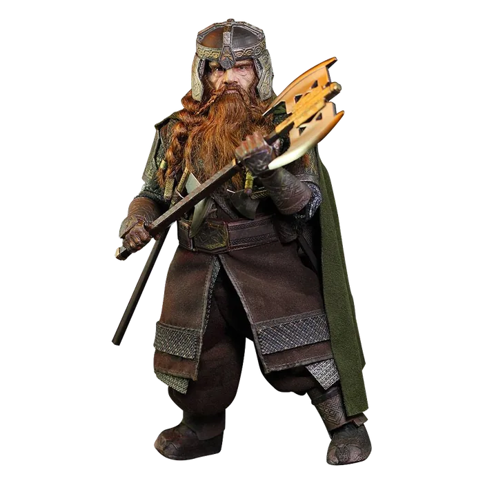
Gimli - Incarné par John Rhys-Davies
Gimli est un nain de la lignée de Durin qui rejoint la Communauté de l'Anneau, combattant avec loyauté et forgeant une amitié improbable avec l'elfe Legolas.
Citation célèbre
"Personne ne frappe un nain sur la tête et s'en tire à si bon compte."
Alliances et Amis proches
- Legolas : Malgré les tensions entre leurs peuples, une profonde amitié naît entre eux, faisant d'eux un symbole de réconciliation entre Elfes et Nains.
- Aragorn : Il respecte et admire son leadership, le suivant fidèlement dans la Communauté et au-delà.
- Frodon et Sam : Les soutient dans leur quête, offrant protection et encouragements.
Rôle dans la quête de l'Anneau
Membre de la Communauté de l'Anneau, Gimli apporte sa force, son courage et ses talents de guerrier. Il combat vaillamment aux côtés de ses compagnons et joue un rôle clé dans la défense du Rohan et du Gondor.
Traits de Caractère
- Fier et tenace.
- Loyal envers ses amis et son peuple.
- Courageux, même face à des ennemis redoutables.
Chronologie Personnelle
- Naissance : 2879 du Troisième Âge, dans les Montagnes Bleues.
- Conseil d'Elrond : Devient membre de la Communauté de l'Anneau en 3018.
- Gouffre de Helm : Défend courageusement le Gouffre de Helm avec Aragorn et Legolas.
- Bataille des Champs du Pelennor : Participe à la défense de Minas Tirith, puis à la bataille de la Porte Noire.
Arme et Objet Spécifique
Hache de guerre : Son arme emblématique, qu'il manie avec maîtrise.
Collier d'argent et de mithril : Offert par Galadriel en signe d'amitié entre Nains et Elfes.
Origines et Peuple
Gimli est un nain de la lignée de Durin, fils de Glóin, célèbre pour sa participation à la quête d'Erebor. Il appartient au peuple des Nains, connu pour sa robustesse, son talent d'artisan et son attachement aux richesses souterraines.
Anecdotes et Faits Divers
- Fasciné par la beauté de Galadriel, il demande une mèche de ses cheveux en cadeau, ce qui est un immense honneur de la part d'une Elfe.
- Aime rivaliser avec Legolas lors des batailles pour déterminer qui tue le plus d'ennemis.
- Premier Nain à naviguer vers Valinor, accompagné de son ami Legolas.
Évolution du Personnage
Au début méfiant envers les Elfes, Gimli surmonte ses préjugés et forge une amitié sincère avec Legolas, devenant un symbole d'unité entre leurs peuples. Sa bravoure et son humour renforcent son rôle de compagnon indispensable dans la Communauté.
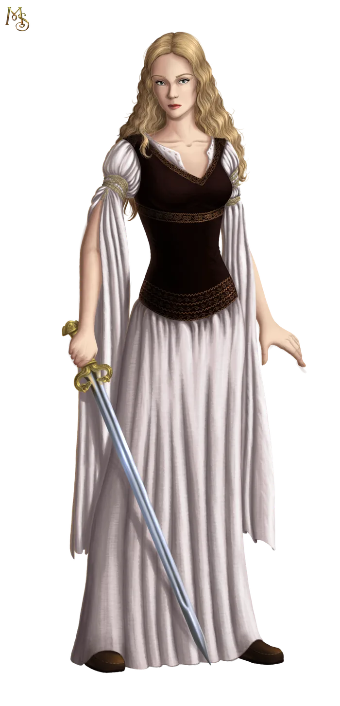
Éowyn - Incarnée par Miranda Otto
Éowyn est une noble du Rohan, déterminée et courageuse, qui se déguise en homme pour combattre au côté des siens et vaincre le Roi-Sorcier d'Angmar.
Citation célèbre
"Je ne suis pas un homme !"
Alliances et Amis proches
- Aragorn : Éprouve une grande admiration pour lui, qu'elle confond un temps avec de l'amour.
- Merry : Devient son compagnon de bataille lors de l'affrontement contre le Roi-Sorcier.
- Théoden : Son oncle bien-aimé, pour lequel elle nourrit une immense loyauté.
Rôle dans la quête de l'Anneau
Bien qu'elle ne soit pas directement impliquée dans la destruction de l'Anneau, Éowyn joue un rôle décisif lors de la bataille des Champs du Pelennor, où elle abat le Roi-Sorcier d'Angmar, accomplissant une prophétie selon laquelle aucun homme ne pouvait le tuer.
Traits de Caractère
- Courageuse et Déterminée
- Indépendante et Résistante face aux contraintes de son époque
- Compatissante et protectrice envers ses proches
Chronologie Personnelle
- Naissance : Vers 2995 du Troisième Âge, au Rohan.
- Bataille des Champs du Pelennor : En 3019, tue le Roi-soricer avec l'aide de Merry.
- Après la Guerre de l'Anneau : Épouse Faramir et devient Dame d'Ithilien.
Arme et Objet Spécifique
Épée rohirrim : Maniée avec grâce et efficacité au combat.
Armure de guerrier : Portée lors de la bataille, dissimulant son identité féminine.
Origines et Peuple
Éowyn est une noble du peuple des Rohirrim, nièce du roi Théoden. Élevée dans une société valorisant les guerriers masculins, elle aspire à prouver sa valeur au combat et à échapper à une vie d'obéissance.
Anecdotes et Faits Divers
- Se fait passer pour un homme sous le nom de Dernhelm pour combattre lors de la bataille des Champs du Pelennor.
- Son triomphe sur le Roi-Sorcier est l'un des moments les plus héroïques de la Guerre de l'Anneau.
- Après la guerre, elle se tourne vers une vie paisible, consacrée à la guérison et la nature.
Évolution du Personnage
Éowyn passe d'un sentiment d'étouffement et d'inutilité dans son rôle traditionnel à une héroïne accomplie, trouvant finalement la paix et un sens à sa vie aux côtés de Faramir. Sa bravoure et sa détermination font d'elle une figure inspirante.
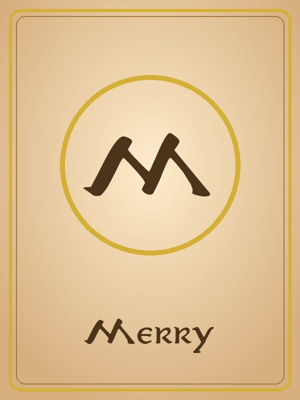
Merry Brandebouc - Incarné par Dominic Monaghan
Merry est un hobbit du Pays-de-Bouc, cousin de Frodon, qui rejoint la Communauté de l'Anneau et devient écuyer du roi Théoden.
Citation célèbre
"Vous pouvez nous faire confiance pour rester à vos côtés quoi qu'il arrive, jusqu'au bout."
Alliances et Amis proches
- Pippin : Son cousin et compagnon inséparable, avec qui il partage farces et aventures.
- Frodon : Son cousin, qu'il suit dès le départ de la Comté pour ne pas le laisser partir seul.
- Théoden : Le roi du Rohan, à qui il jure fidélité et dont il devient l'écuyer.
- Éowyn : Elle l'emmène en secret au combat, et ils affrontent ensemble le Roi-Sorcier.
Rôle dans la quête de l'Anneau
Merry accompagne Frodon depuis la Comté et fait partie de la Communauté de l'Anneau. Capturé avec Pippin par les Uruk-hai, il s'échappe dans la forêt de Fangorn et pousse les Ents à attaquer Isengard. À la bataille des Champs du Pelennor, il blesse le Roi-Sorcier d'Angmar, permettant à Éowyn de le vaincre.
Traits de Caractère
- Débrouillard et réfléchi.
- Loyal envers ses amis.
- Courageux malgré sa petite taille.
Chronologie Personnelle
- Naissance : 2982 du Troisième Âge, au Pays-de-Bouc.
- Départ : Quitte la Comté avec Frodon, Sam et Pippin en 3018.
- Fangorn : Rencontre Sylvebarbe après avoir échappé aux Uruk-hai.
- Champs du Pelennor : Blesse le Roi-Sorcier d'Angmar en 3019.
- Retour : Aide à libérer la Comté à son retour.
Arme et Objet Spécifique
Dague de l'Ouistrenesse : Une lame ancienne qui permet de blesser le Roi-Sorcier.
Épée et bouclier du Rohan : Reçus lorsqu'il devient écuyer de Théoden.
Origines et Peuple
Merry est le fils de Saradoc Brandebouc, Maître du Pays-de-Bouc, une région de hobbits située à l'est de la Comté, de l'autre côté du Brandevin. Les Brandebouc sont réputés plus aventureux que les autres hobbits, et n'hésitent pas à naviguer sur la rivière.
Anecdotes et Faits Divers
- En buvant la boisson des Ents, Merry et Pippin grandissent et deviennent les hobbits les plus grands de l'histoire.
- Dominic Monaghan et Billy Boyd (Pippin) sont devenus de très bons amis pendant le tournage.
- À son retour, il devient Maître du Pays-de-Bouc.
Évolution du Personnage
D'abord un jeune hobbit insouciant qui vole des légumes dans les champs du fermier Maggotte, Merry devient un guerrier respecté du Rohan, capable d'affronter l'un des plus terribles serviteurs de Sauron.
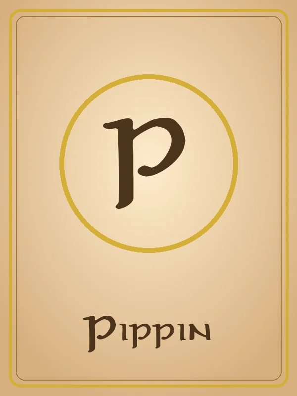
Pippin Touque - Incarné par Billy Boyd
Pippin est le plus jeune hobbit de la Communauté de l'Anneau : curieux et étourdi, il devient pourtant garde de la Citadelle de Minas Tirith.
Citation célèbre
"Et le deuxième petit déjeuner ?"
Alliances et Amis proches
- Merry : Son cousin et meilleur ami, dont il ne se sépare presque jamais.
- Gandalf : Le magicien, souvent agacé par ses bêtises, l'emmène avec lui à Minas Tirith.
- Faramir : Pippin lui sauve la vie en prévenant Gandalf quand Denethor veut le brûler.
- Denethor : L'Intendant du Gondor, à qui il jure fidélité pour payer la dette de Boromir.
Rôle dans la quête de l'Anneau
Membre de la Communauté de l'Anneau, Pippin est capturé avec Merry par les Uruk-hai. Plus tard, il regarde dans le palantír d'Orthanc et se retrouve face à Sauron. À Minas Tirith, il allume les feux d'alarme du Gondor, sauve Faramir du bûcher et combat à la Porte Noire.
Traits de Caractère
- Curieux et parfois étourdi.
- Joyeux et plein d'humour.
- Fidèle et plus courageux qu'il n'y paraît.
Chronologie Personnelle
- Naissance : 2990 du Troisième Âge, dans la Comté.
- Départ : Rejoint Frodon dans son voyage en 3018.
- Moria : Fait tomber un seau dans un puits, ce qui réveille les orques.
- Minas Tirith : Devient garde de la Citadelle en 3019.
- Porte Noire : Combat aux côtés d'Aragorn lors de la dernière bataille.
Arme et Objet Spécifique
Dague de l'Ouistrenesse : Une lame ancienne, reçue au début de la quête.
Livrée de la Citadelle : L'uniforme noir et argent des gardes de Minas Tirith.
Origines et Peuple
Pippin est le fils de Paladin Touque, le Thain de la Comté, c'est-à-dire son chef. La famille Touque est connue pour son goût de l'aventure : la mère de Bilbon était elle-même une Touque.
Anecdotes et Faits Divers
- Il chante une chanson pour Denethor pendant que Faramir part au combat ; c'est Billy Boyd qui l'interprète.
- Il est le plus jeune membre de la Communauté.
- Il deviendra lui-même Thain de la Comté.
Évolution du Personnage
Le plus insouciant des hobbits devient l'un des plus braves : ses maladresses du début laissent place à un sens du devoir qui lui fait jurer fidélité au Gondor et sauver la vie de Faramir.
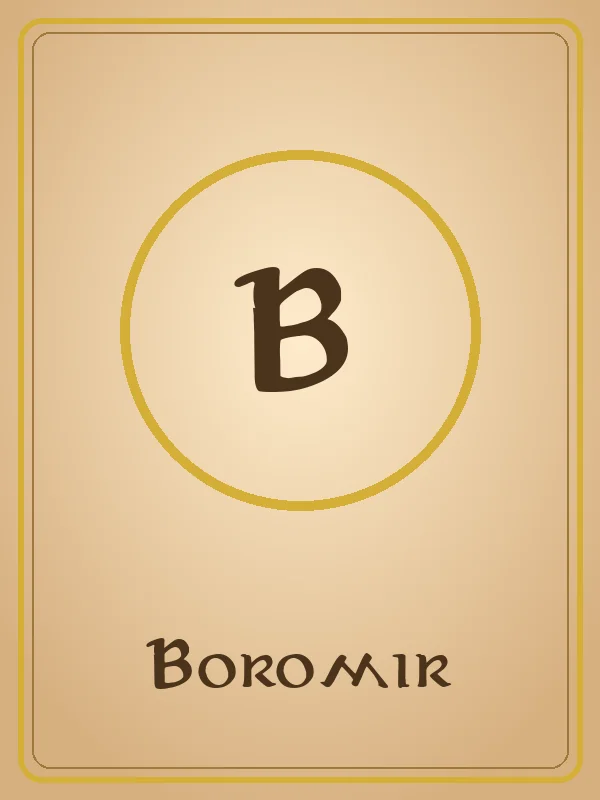
Boromir - Incarné par Sean Bean
Boromir est le fils aîné de l'Intendant du Gondor, un guerrier valeureux tenté par l'Anneau, qui se rachète en défendant Merry et Pippin.
Citation célèbre
"On ne pénètre pas si facilement dans le Mordor."
Alliances et Amis proches
- Aragorn : D'abord méfiant envers lui, il finit par le reconnaître comme son roi.
- Faramir : Son jeune frère, qu'il aime et protège.
- Merry et Pippin : Il leur apprend à manier l'épée et donne sa vie pour les défendre.
- Denethor : Son père, l'Intendant du Gondor, qui le préfère à Faramir.
Rôle dans la quête de l'Anneau
Envoyé par son père au Conseil d'Elrond, Boromir y représente le Gondor et rejoint la Communauté de l'Anneau. Peu à peu tenté par l'Anneau, il essaie de le prendre à Frodon à Amon Hen. Il se rachète aussitôt en défendant Merry et Pippin contre les Uruk-hai.
Traits de Caractère
- Brave et fier.
- Profondément attaché à son peuple.
- Sensible à la tentation du pouvoir.
Chronologie Personnelle
- Naissance : 2978 du Troisième Âge, au Gondor.
- Fondcombe : Arrive au Conseil d'Elrond en 3018.
- Moria : Traverse la Moria avec la Communauté.
- Amon Hen : Tombe en défendant Merry et Pippin en 3019.
- Funérailles : Son corps est confié à l'Anduin, vers les chutes du Rauros.
Arme et Objet Spécifique
Cor du Gondor : Un cor ancien dont il sonne pour appeler à l'aide.
Épée et bouclier : Les armes d'un capitaine du Gondor.
Origines et Peuple
Boromir est un Homme du Gondor, descendant des Númenoréens. Il appartient à la maison des Intendants, qui gouvernent le Gondor en l'absence de roi depuis des siècles.
Anecdotes et Faits Divers
- Sa réplique sur le Mordor est devenue l'un des mèmes les plus connus d'Internet.
- Son cor, fendu en deux, est retrouvé dans l'Anduin et rapporté à Minas Tirith.
- Sean Bean est connu pour avoir joué de nombreux personnages qui meurent à l'écran.
Évolution du Personnage
Guerrier fier convaincu que l'Anneau pourrait sauver son peuple, Boromir cède un instant à la tentation. Il reconnaît sa faute, se bat jusqu'au bout pour protéger les hobbits et meurt en héros, en appelant Aragorn « mon roi ».
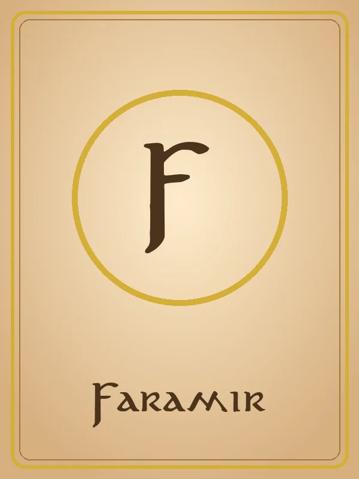
Faramir - Incarné par David Wenham
Faramir est le frère cadet de Boromir, un capitaine du Gondor sage et mesuré, qui laisse finalement Frodon poursuivre sa route avec l'Anneau.
Citation célèbre
"Je ne prendrais pas cette chose, même si elle gisait au bord du chemin."
Alliances et Amis proches
- Boromir : Son frère aîné, qu'il admire profondément.
- Frodon et Sam : Il les capture en Ithilien, puis les laisse repartir vers le Mordor.
- Gandalf : Son mentor, qui le protège de la colère de son père.
- Éowyn : Rencontrée dans les Maisons de Guérison, elle devient son épouse.
Rôle dans la quête de l'Anneau
Capitaine des rôdeurs de l'Ithilien, Faramir capture Frodon et Sam et découvre l'Anneau. Il finit par les libérer pour qu'ils poursuivent leur mission. Il défend ensuite Osgiliath, est grièvement blessé, et échappe de peu au bûcher préparé par son père Denethor.
Traits de Caractère
- Sage et juste.
- Humble et réfléchi.
- Courageux, même face à un combat perdu d'avance.
Chronologie Personnelle
- Naissance : 2983 du Troisième Âge, au Gondor.
- Ithilien : Rencontre Frodon et Sam en 3019.
- Osgiliath : Défend la cité contre les armées du Mordor.
- Minas Tirith : Soigné par Aragorn dans les Maisons de Guérison.
- Après la guerre : Devient Prince d'Ithilien et épouse Éowyn.
Arme et Objet Spécifique
Arc : Faramir est un excellent archer, comme ses rôdeurs.
Épée : L'arme d'un capitaine du Gondor.
Origines et Peuple
Faramir est un Homme du Gondor, fils cadet de Denethor II, l'Intendant de Minas Tirith. Comme son frère, il descend des Númenoréens, mais il tient de sa mère un goût pour le savoir et les anciennes histoires.
Anecdotes et Faits Divers
- Dans les films, il est d'abord tenté d'emmener l'Anneau au Gondor, alors que dans le livre il le refuse aussitôt.
- Son père lui préfère ouvertement Boromir.
- Il devient Intendant du Gondor, puis Prince d'Ithilien sous le règne d'Aragorn.
Évolution du Personnage
Longtemps en quête de l'estime de son père, Faramir apprend à suivre son propre jugement. Son choix de laisser partir Frodon montre une sagesse que son frère n'avait pas su trouver.
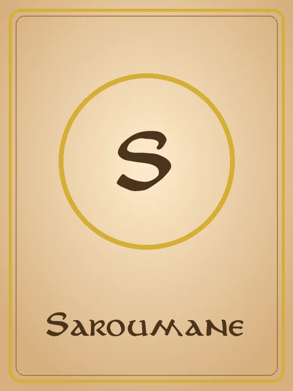
Saroumane le Blanc - Incarné par Christopher Lee
Saroumane est le chef de l'ordre des magiciens, qui trahit ses alliés pour s'allier à Sauron depuis sa tour d'Orthanc, à Isengard.
Citation célèbre
"Contre la puissance du Mordor, il ne peut y avoir de victoire."
Alliances et Amis proches
- Sauron : Il s'allie à lui en secret, espérant partager son pouvoir.
- Gríma Langue-de-Serpent : Son espion, qui empoisonne l'esprit du roi Théoden.
- Gandalf : Autrefois son ami et son allié, il devient son ennemi.
- Les Uruk-hai : Les guerriers qu'il crée pour attaquer le Rohan.
Rôle dans la quête de l'Anneau
Saroumane emprisonne Gandalf au sommet d'Orthanc, crée une armée d'Uruk-hai et envoie ses troupes attaquer le Rohan au Gouffre de Helm. Sa forteresse est finalement détruite par les Ents de Fangorn.
Traits de Caractère
- Savant et brillant.
- Orgueilleux et avide de pouvoir.
- Manipulateur, à la voix envoûtante.
Chronologie Personnelle
- Arrivée : Arrive en Terre du Milieu vers l'an 1000 du Troisième Âge.
- Isengard : S'installe dans la tour d'Orthanc.
- Conseil Blanc : Participe au conseil des Sages au temps du Hobbit.
- Trahison : Emprisonne Gandalf en 3018.
- Chute : Isengard est détruite par les Ents en 3019.
Arme et Objet Spécifique
Bâton blanc : Le bâton du chef des magiciens, brisé par Gandalf.
Palantír d'Orthanc : Une pierre de vision qui le met en contact avec Sauron.
Origines et Peuple
Saroumane est un Maia, un esprit envoyé par les Valar pour aider les peuples libres contre Sauron. Il fait partie des Istari, les magiciens, comme Gandalf, et en est le chef sous le nom de Saroumane le Blanc.
Anecdotes et Faits Divers
- Christopher Lee est le seul acteur des films à avoir rencontré J.R.R. Tolkien.
- Il relisait Le Seigneur des Anneaux une fois par an.
- La scène de sa fin n'apparaît que dans la version longue du Retour du Roi.
Évolution du Personnage
Le plus sage des magiciens se laisse corrompre par son désir de pouvoir : en voulant égaler Sauron, il devient l'un de ses serviteurs et perd tout ce qu'il avait construit.
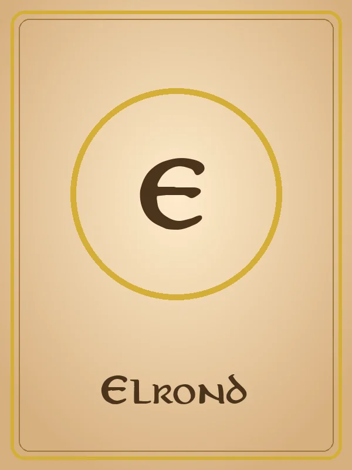
Elrond - Incarné par Hugo Weaving
Elrond est le seigneur elfe de Fondcombe, sage et très ancien, qui réunit le Conseil où naît la Communauté de l'Anneau.
Citation célèbre
"J'étais là, Gandalf. J'étais là il y a trois mille ans."
Alliances et Amis proches
- Gandalf : Son vieil ami, avec qui il prépare la lutte contre Sauron.
- Arwen : Sa fille, qu'il voudrait voir partir vers les Terres Immortelles.
- Aragorn : Élevé à Fondcombe, il le considère presque comme un fils.
- Galadriel : Une alliée de longue date, membre comme lui du Conseil Blanc.
Rôle dans la quête de l'Anneau
Elrond réunit à Fondcombe le Conseil qui décide de détruire l'Anneau, et forme la Communauté chargée de cette mission. Dans les films, il fait reforger l'épée Narsil, qui devient Andúril, et la remet à Aragorn.
Traits de Caractère
- Sage et prudent.
- Protecteur envers les siens.
- Méfiant envers les Hommes, qu'il a vus échouer.
Chronologie Personnelle
- Dernière Alliance : Combat Sauron aux côtés des Hommes à la fin du Second Âge.
- Mont du Destin : Pousse Isildur à détruire l'Anneau, en vain.
- Le Hobbit : Lit les runes de la carte de Thorin en 2941 du Troisième Âge.
- Conseil d'Elrond : Forme la Communauté de l'Anneau en 3018.
- Départ : Quitte la Terre du Milieu par les Havres Gris.
Arme et Objet Spécifique
Vilya : L'Anneau de l'Air, le plus puissant des trois anneaux des Elfes.
Épée elfique : Celle qu'il porte lors de la Dernière Alliance.
Origines et Peuple
Elrond est un Semi-Elfe, fils d'Eärendil et d'Elwing. Il a choisi d'appartenir au peuple des Elfes, tandis que son frère Elros a choisi les Hommes et est devenu le premier roi de Númenor.
Anecdotes et Faits Divers
- Fondcombe s'appelle Imladris en langue elfique.
- Hugo Weaving est aussi connu pour avoir joué l'agent Smith dans Matrix.
- Aragorn, son protégé, descend de son frère Elros.
Évolution du Personnage
Longtemps convaincu que les Hommes sont trop faibles pour résister à l'Anneau, Elrond finit par placer sa confiance en Aragorn, au point de lui donner la main de sa fille.
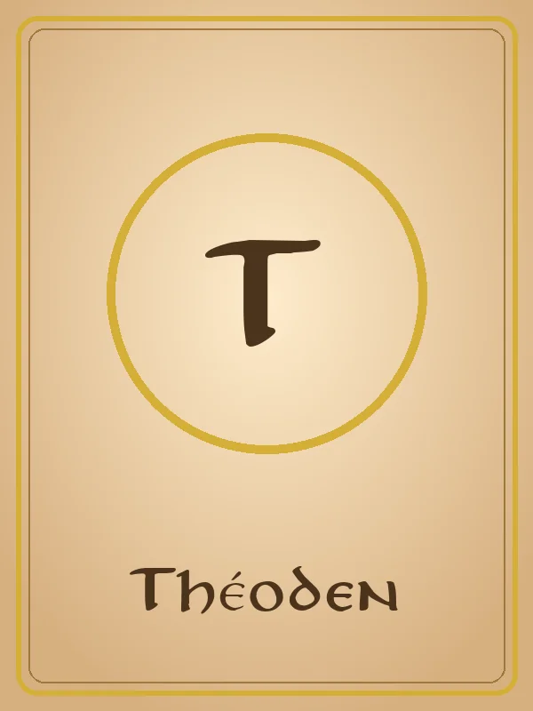
Théoden - Incarné par Bernard Hill
Théoden est le roi du Rohan : d'abord ensorcelé par Saroumane, il retrouve sa force et mène ses cavaliers au secours du Gondor.
Citation célèbre
"Debout, debout, Cavaliers de Théoden !"
Alliances et Amis proches
- Éowyn et Éomer : Sa nièce et son neveu, qu'il a élevés comme ses enfants.
- Gandalf : Le magicien le libère de l'emprise de Saroumane.
- Aragorn : Ils combattent ensemble au Gouffre de Helm.
- Merry : Le hobbit devient son écuyer.
Rôle dans la quête de l'Anneau
Libéré de l'emprise de Saroumane par Gandalf, Théoden conduit son peuple au Gouffre de Helm et y résiste aux Uruk-hai. Il répond ensuite à l'appel du Gondor et mène la grande charge des Rohirrim aux Champs du Pelennor, où il tombe face au Roi-Sorcier.
Traits de Caractère
- Noble et fier.
- Courageux.
- Dévoué à son peuple.
Chronologie Personnelle
- Naissance : 2948 du Troisième Âge, au Rohan.
- Couronnement : Devient roi du Rohan en 2980.
- Edoras : Libéré de Saroumane par Gandalf en 3019.
- Gouffre de Helm : Défend la forteresse contre les Uruk-hai.
- Champs du Pelennor : Meurt au combat en menant la charge des Rohirrim.
Arme et Objet Spécifique
Herugrim : L'épée des rois du Rohan.
Nivacrin : Son fidèle cheval blanc.
Origines et Peuple
Théoden est un Homme du Rohan, un peuple de cavaliers appelé les Rohirrim. Il descend d'Eorl le Jeune, fondateur du royaume, et règne depuis le palais doré de Meduseld, à Edoras.
Anecdotes et Faits Divers
- Il perd son fils unique, Théodred, au début des Deux Tours.
- Bernard Hill a aussi joué le capitaine du Titanic dans le film de James Cameron.
- Sa charge aux Champs du Pelennor est l'une des scènes les plus célèbres de la trilogie.
Évolution du Personnage
Affaibli et manipulé, Théoden semble n'être plus qu'un vieil homme. Une fois libéré, il redevient un grand roi, qui choisit d'aider le Gondor malgré l'abandon passé et mène son peuple jusqu'à la victoire.
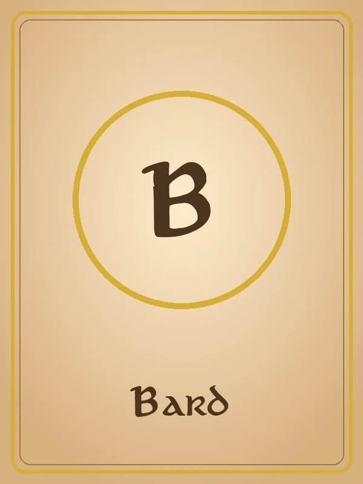
Bard l'Archer - Incarné par Luke Evans
Bard est un batelier de Lacville, descendant des seigneurs de Dale, qui abat le dragon Smaug d'une flèche noire.
Citation célèbre
"Flèche noire, je t'ai gardée pour la fin."
Alliances et Amis proches
- Bain, Sigrid et Tilda : Ses trois enfants, qu'il élève seul.
- Bilbon et les Nains : Il les fait entrer en secret à Lacville.
- Thranduil : Le roi elfe devient son allié face à Thorin.
- Gandalf : Le magicien le soutient pendant la Bataille des Cinq Armées.
Rôle dans la quête d'Erebor
Bard aide la compagnie de Thorin à passer à Lacville. Quand Smaug attaque la ville, il le tue d'une flèche noire. Il mène ensuite les survivants jusqu'à Erebor pour réclamer une part du trésor, et combat lors de la Bataille des Cinq Armées.
Traits de Caractère
- Courageux.
- Juste et protecteur.
- Méfiant envers ceux qui gouvernent.
Chronologie Personnelle
- Lacville : Vit comme batelier sur le Long Lac.
- Arrivée des Nains : Les cache dans sa maison en 2941 du Troisième Âge.
- Attaque de Smaug : Abat le dragon au-dessus de Lacville.
- Bataille des Cinq Armées : Combat aux côtés des Elfes et des Nains.
- Après la bataille : Rebâtit la ville de Dale, dont il devient roi.
Arme et Objet Spécifique
Arc : Un archer d'une précision redoutable.
Flèche noire : La dernière flèche, capable de percer les écailles du dragon.
Origines et Peuple
Bard est un Homme de Lacville, descendant de Girion, le dernier seigneur de Dale, la ville détruite par Smaug quand le dragon s'est emparé d'Erebor.
Anecdotes et Faits Divers
- Dans les films, il pose la flèche noire sur l'épaule de son fils Bain pour viser Smaug.
- Dans le livre, c'est une grive qui lui révèle le point faible du dragon.
- Luke Evans a aussi joué Gaston dans La Belle et la Bête.
Évolution du Personnage
Simple batelier méprisé par le Maître de Lacville, Bard devient le héros qui libère la région du dragon, puis le roi qui rebâtit Dale.
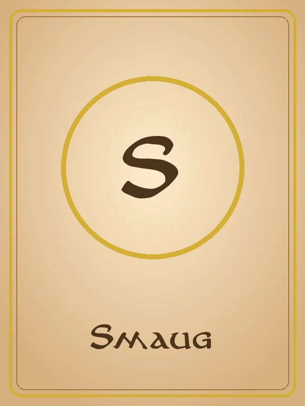
Smaug - Incarné par Benedict Cumberbatch
Smaug est un dragon redoutable qui s'est emparé d'Erebor et de son trésor, chassant les Nains de leur royaume.
Citation célèbre
"Je suis le feu. Je suis… la mort !"
Alliances et Amis proches
- Aucun allié : Smaug ne vit que pour son trésor.
- Bilbon : Le hobbit ose lui parler et le flatter pour découvrir ses faiblesses.
- Thorin : Le roi nain veut reprendre la Montagne qu'il lui a volée.
- Bard : L'archer qui finit par l'abattre.
Rôle dans la quête d'Erebor
Smaug garde le trésor d'Erebor depuis des décennies. Réveillé par Bilbon et les Nains, il se venge sur Lacville, qu'il incendie, avant d'être abattu par Bard.
Traits de Caractère
- Orgueilleux et vaniteux.
- Rusé, il aime les énigmes et la flatterie.
- Cupide, il connaît chaque pièce de son trésor.
Chronologie Personnelle
- Attaque d'Erebor : Chasse les Nains et détruit Dale en 2770 du Troisième Âge.
- Le long sommeil : Dort sur le trésor pendant près de deux siècles.
- Réveil : Découvre Bilbon dans la Montagne en 2941.
- Lacville : Incendie la ville et y trouve la mort.
Arme et Objet Spécifique
Écailles : Une armure presque impénétrable.
Point faible : Une écaille manquante sur son poitrail.
Origines et Peuple
Smaug est le dernier des grands dragons du Nord. Attiré par l'or, il s'est emparé de la Montagne Solitaire et de son immense trésor.
Anecdotes et Faits Divers
- Benedict Cumberbatch lui prête sa voix et ses mouvements, grâce à la capture de mouvement.
- Benedict Cumberbatch et Martin Freeman (Bilbon) jouaient aussi Sherlock et Watson dans la série Sherlock.
- On le surnomme Smaug le Doré ou Smaug le Terrible.
Évolution du Personnage
Sûr de sa puissance et persuadé d'être invincible, Smaug se laisse aller à la colère et à l'orgueil, ce qui le pousse à quitter la Montagne et cause sa perte.
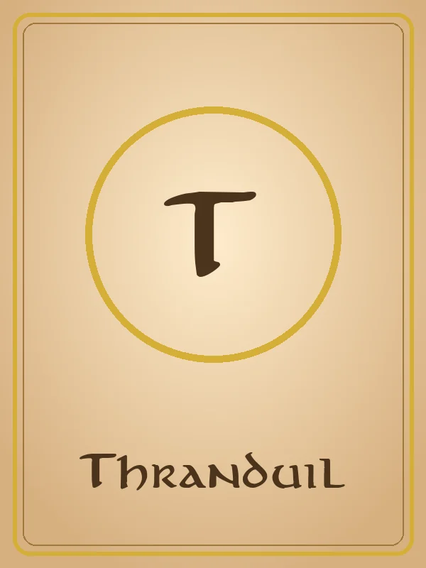
Thranduil - Incarné par Lee Pace
Thranduil est le roi des Elfes sylvains de la Forêt Noire, père de Legolas, fier et distant envers les Nains.
Citation célèbre
"Il y a des joyaux dans la Montagne que je désire, moi aussi."
Alliances et Amis proches
- Legolas : Son fils, prince de la Forêt Noire.
- Tauriel : La capitaine de sa garde, qu'il tient à l'écart de Legolas.
- Bard : Il s'allie à lui pour réclamer une part du trésor d'Erebor.
- Thorin : Ennemi de longue date, qu'il fait emprisonner.
Rôle dans la quête d'Erebor
Thranduil fait emprisonner la compagnie de Thorin dans son palais. Il marche ensuite sur Erebor avec son armée pour réclamer les joyaux blancs de Lasgalen, s'allie à Bard et combat lors de la Bataille des Cinq Armées.
Traits de Caractère
- Fier et majestueux.
- Prudent, voire égoïste.
- Protecteur envers son peuple.
Chronologie Personnelle
- Royaume : Règne sur la Forêt Noire, autrefois appelée Vertbois-le-Grand.
- Attaque de Smaug : Refuse de secourir les Nains en 2770 du Troisième Âge.
- La compagnie de Thorin : Capture les Nains dans sa forêt en 2941.
- Bataille des Cinq Armées : Combat aux côtés des Hommes et des Nains.
Arme et Objet Spécifique
Épées elfiques : Il combat avec deux lames.
Monture : Un grand cerf, qu'il chevauche au combat.
Origines et Peuple
Thranduil est un Elfe, roi des Elfes sylvains qui vivent dans la Forêt Noire, au nord-est de la Terre du Milieu. Son palais est creusé sous une colline, au cœur de la forêt.
Anecdotes et Faits Divers
- Dans les films, il chevauche un grand cerf, une image restée célèbre.
- C'est lui qui conseille à Legolas de rejoindre un jeune rôdeur appelé Grands-Pas.
- Lee Pace mesure 1,96 m, ce qui renforce l'allure majestueuse du roi elfe.
Évolution du Personnage
Longtemps replié sur son royaume et sur son chagrin, Thranduil finit par s'engager dans la bataille et par se réconcilier avec son fils.